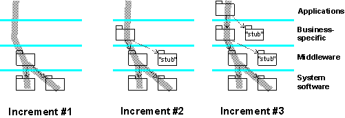

|
When this task begins, implementation subsystems have been delivered to satisfy the requirements of the next (the
'target') build described in the Artifact: Integration Build Plan, recalling that the Integration
Build Plan may define the need for several builds in an iteration. Depending on the complexity and number of subsystems
to be integrated, it is often more efficient to produce the target build in a number of steps, adding more subsystems
with each step, and producing a series of intermediate 'mini' builds - thus, each build planned for an iteration may,
in turn, have its own sequence of transient intermediate builds. These are subjected to a minimal integration test
(usually a subset of the tests described in the Integration Build Plan for this target build) to ensure that what is
added is compatible with what already exists in the system integration workspace. It should be easier to isolate and
diagnose problems using this approach.
The integrator accepts delivered subsystems incrementally into the system integration workspace, in the process
resolving any merge conflicts. It is recommended that this be done bottom-up with respect to the layered
structure, making sure that the versions of the subsystems are consistent, taking imports into consideration. The
increment of subsystems is compiled and linked into an intermediate build, which is then provided to the tester to
execute a minimal system integration test.

This diagram shows a build produced in three increments. Some subsystems are only needed as stubs, to make it possible
to compile and link the other subsystems, and provide the essential minimal run-time behavior.
The final increment of a sequence produces the target build, as planned in the Integration Build Plan. When this has
been minimally tested, an initial or provisional baseline is created for this build - invoking the  Task: Create Baselines in the Configuration Management discipline.
The build is now made available to the tester for complete system testing. The nature and depth of this testing will be
as planned in the Integration Build Plan, with the final build of an iteration being subjected to all the tests defined
in the Iteration Test Plan. Task: Create Baselines in the Configuration Management discipline.
The build is now made available to the tester for complete system testing. The nature and depth of this testing will be
as planned in the Integration Build Plan, with the final build of an iteration being subjected to all the tests defined
in the Iteration Test Plan.
|